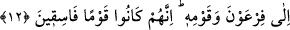

Onların evlâ olanı terk etmeleri de bizim küçük günahlarımız gibidir. Çünkü ebrârın/iyi
kimselerin sevap/iyilik saydıkları şeyler, mukarrebîne/Hakk’a yakın kılınanlara göre
günah kabul edilir.”
el-Fütûhât’ta der ki: “Bilesin ki havâssın günâhları, başkalarının tabîattan gelen
şehvetin hükmüyle işledikleri günahlar gibi değildir. Onların günahları te’vil’de hatâ
etmeleri ile olur.”
Bunun izâhı şöyledir: Hak Teâlâ, ârif-i billâh bir kulunun muhâlif bir ameli işlemesini
murâd etmişse, te’vîl ile bu ameli işlemeyi ona güzel gösterir. Çünkü ârifin ma’rifeti,
onu kendisinde bir hak taraf olduğuna şâhidlik eden bir te’vil olmaksızın muhâlefete
düşmekten alıkoyar. Çünkü ârif asla hurmeti/haramı çiğnemez. Süslü gösterme ve te’vil
yoluyla mukadder bir hatâya düşerse, Allah Teâlâ ona kendisini bu fiile sevkeden o
te’vilin bozuk olduğunu bildirir. Nitekim Âdem (a.s.) hakkında böyle olmuştur. Çünkü o,
te’vîl ile âsî olmuştu. İşte o zaman ârif, şerîat lisanının kendisinin isyan ettiğine
hükmettiği gibi o da kendisi aleyhine aynı hükmü verir. O bu hatâya düşmeden önce
te’vîl şüphesi bulunduğu için âsî değildi. Nitekim müctehid bir meseledeki meşrû
hükmün o olduğuna inanarak herhangi bir hususta fetvâ verdiği zaman hatâ ile
vasfedilmez. Sonra ikinci bir durumda delîl ile hatâ ettiği kendisine zâhir olursa, daha
önce değil delilin zâhir olduğu zamanda zâhir lisanı onun hatâ ettiğine hükmeder. İşte
böylece keşf hâli üzere olan bir kulun te’vîl, süsleme, gaflet ve unutma olmadan asla
Rabbine isyân etmesinin mümkün olmadığı bilindi.
Bâyezid (k.s.)’a: “Ehl-i keşften olan bir ârif günah işler mi?” diye sorulduğunda
“Evet, Allah’ın emri mutlaka yerine gelecek, yazılmış bir kaderdir. (el-Ahzâb,
33/38)” diye cevap vermesine gelince, bu yukarda söylenenlere ters düşmez. Yâni
Allah hakkında takyîd ile (kayıt ve şart koşarak) hükmetmemeleri âriflerin
edeblerindendir. Bâyezid sanki şöyle demektedir: Eğer Hak Teâlâ ezelî ilminde onlar
aleyhine bir şey takdir etmişse, o mutlaka meydana gelir. Meydana gelince de o kimse
için mutlaka bir hicâb vardır. Bunun en azı te’vîl veya tezyîn (süslü gösterme)dir. Buni
iyi bil!
12. Elini koynuna sok da kusursuz bembeyaz çıksın. Dokuz mûcize ile Fir’avn ve
kavmine (git). Çünkü onlar artık yoldan çıkmış bir kavim olmuşlardır.
“Elini koynuna sok da” Elini gömleğinin yakasına sok da. Âyette “elini koluna/yenine
sok” buyrulmadı. Çünkü Mûsâ (a.s.)’ın üzerinde kolu ve düğmeleri olmayan yün bir
elbise vardı. Mübârek eli de açıktaydı. İşte Mûsâ (a.s.)’a elini dış gömlek yerine
giyilen bu küçük bir cübbesinin içine sokması emredildi.
“Kusursuz” abraşlık ve benzeri bir hastalık olmaksızın “bembeyaz” güneş ışığı gibi